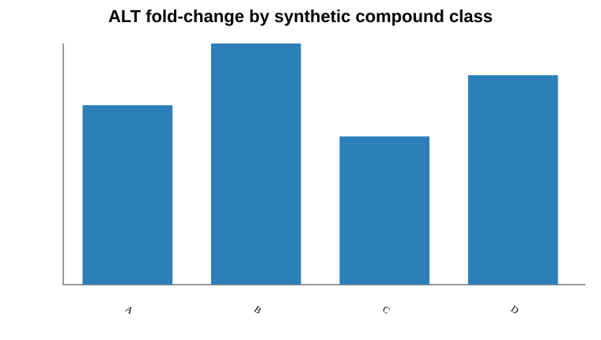

Bench to Bytes portfolio analysis report. Uses only public or synthetic data.
A structured AI-assisted project scaffold can turn a toy toxicity dataset into a reproducible analysis workflow.
Synthetic compound toxicity table generated from the Bench to Bytes course schema; no real compounds or employer data are used.
data/compound_tox.csvoutputs/class_summary.csvoutputs/tox_features.csvfigures/alt_by_class.svgClasses B and D show higher mean ALT fold-change by construction, validating that the workflow can recover a known signal before being adapted to real public data.
